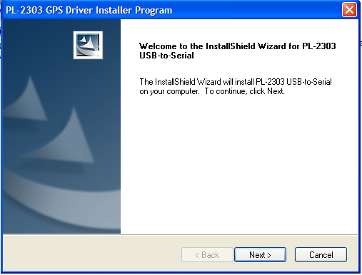

Laporan Waktu Tunggu digunakan untuk melihat jumlah rata-rata waktu tunggu per periode yang diinginkan.
Waktu Tunggu adalah waktu ketika dilakukan tindakan (suster / terapis mengganti status menjadi "tindakan") dikurangi waktu customer datang (CRO mengganti status menjadi "datang").
Laporan ini dapat diakses melalui menu Laporan --> Laporan Waktu Tunggu
Berikut merupakan tampilan halaman pencarian waktu tunggu

Dapat dilihat dari hasil pencaraian diatas, pada tanggal 5 Juni 2011:
Note:
Total Customer di sini adalah mungkin berbeda dengan jumlah kunjungan, karena perhitungan total customer di sini adalah berdasarkan dari appointment yang masuk, sedangkan jumlah kunjungan adalah berdasarkan transaksi / faktur yang terjadi.

Copyright © 2010, IT Department of Miracle Aesthetic Clinic Group
Created with the Freeware Edition of HelpNDoc: Easily create CHM Help documents